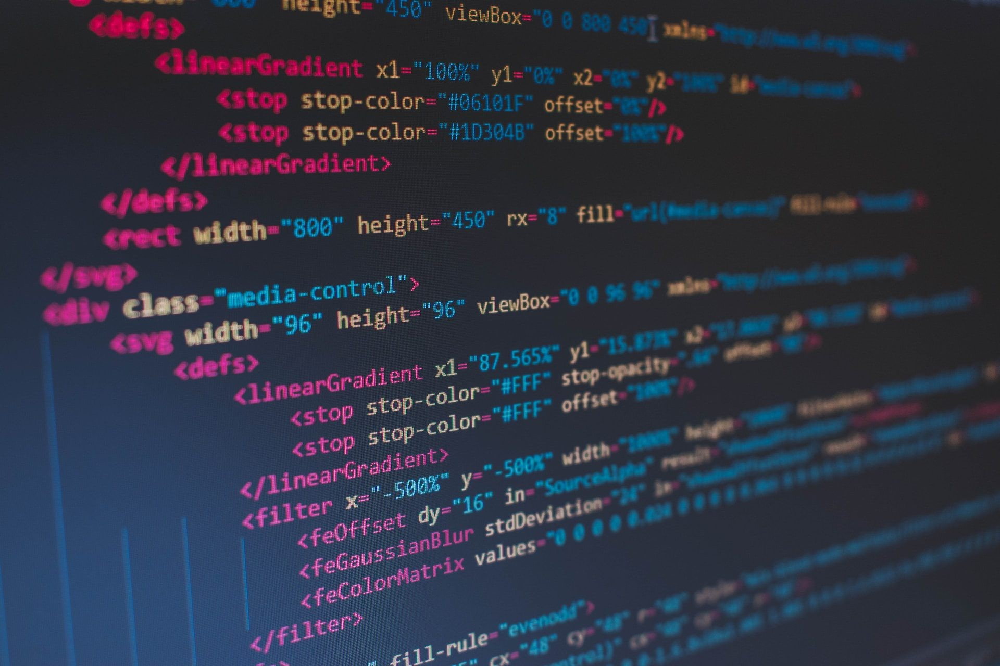

Bahasa Pemrograman
Hypertext Markup Language (HTML)
HTML (HyperText Markup Language) adalah bahasa standar yang digunakan untuk membuat dan menyusun halaman web. HTML menggunakan tag atau elemen untuk menentukan struktur dan isi dari sebuah halaman web, seperti teks, gambar, tautan, dan elemen lainnya. Setiap elemen HTML dikelilingi oleh tanda kurung sudut (`<>`), misalnya `
Cascadin Style Sheets (CSS)
CSS (Cascading Style Sheets) adalah bahasa yang digunakan untuk menentukan tampilan dan gaya dari
sebuah halaman web yang dibuat dengan HTML. Dengan CSS, kita dapat mengatur elemen-elemen seperti
warna, ukuran, jenis huruf, tata letak, jarak antar elemen, dan efek visual lainnya, sehingga
tampilan halaman web menjadi lebih menarik dan terstruktur.
CSS bekerja dengan "menerapkan gaya" pada elemen HTML menggunakan selektor, yang menentukan elemen
mana yang akan diberi gaya. Misalnya, kita bisa menggunakan CSS untuk mengubah warna teks paragraf
menjadi merah atau mengatur lebar dan tinggi sebuah gambar.
CSS juga mendukung konsep "cascading" atau berjenjang, di mana aturan gaya yang ditetapkan dapat
diterapkan secara bertingkat dan saling menimpa sesuai urutan prioritasnya. Dengan begitu, desainer
web dapat mengontrol tampilan halaman dengan lebih fleksibel dan konsisten.
JavaScript
JavaScript adalah bahasa pemrograman yang digunakan untuk membuat halaman web menjadi interaktif dan dinamis. Berbeda dengan HTML yang mengatur struktur dan CSS yang mengatur tampilan, JavaScript memungkinkan pengembang web menambahkan fungsi interaktif seperti animasi, validasi formulir, penanganan acara (event handling), manipulasi elemen HTML, dan pengambilan data dari server tanpa harus memuat ulang halaman (menggunakan teknik seperti AJAX).
Tabel Bahasa Pemrograman
Berikut adalah contoh tabel sederhana yang berisi bahasa pemrograman populer:
| Bahasa | Tahun Diperkenalkan | Paradigma |
|---|---|---|
| Python | 1991 | Multi-paradigma |
| JavaScript | 1995 | Event-driven, Fungsional |
| C++ | 1985 | Berorientasi Objek |